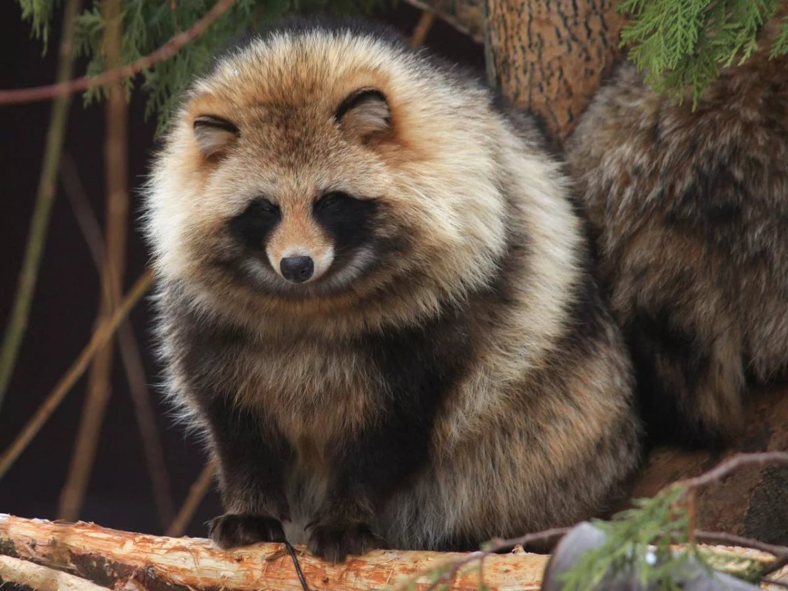
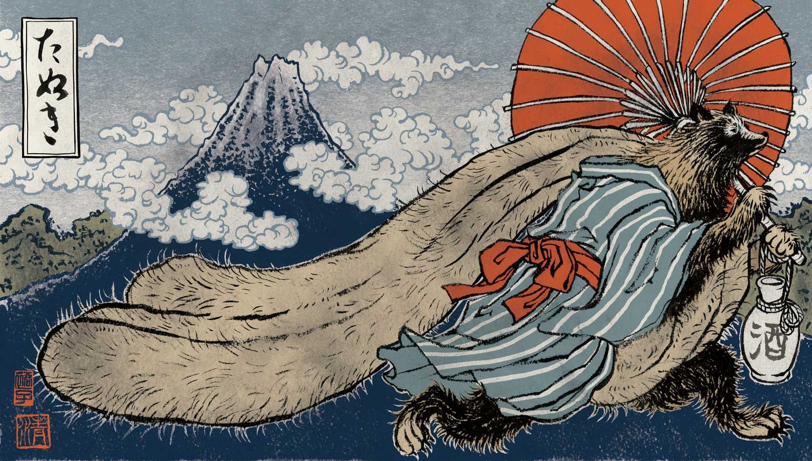
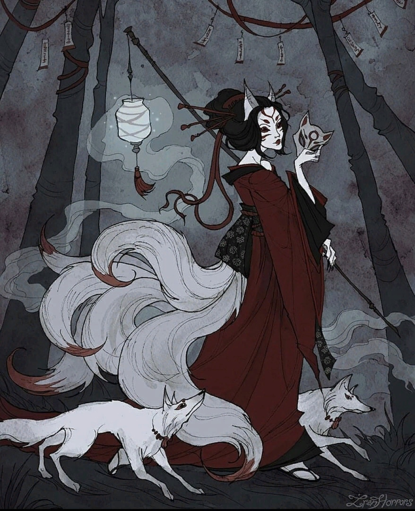
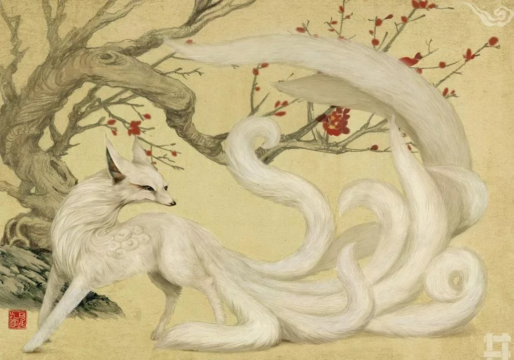
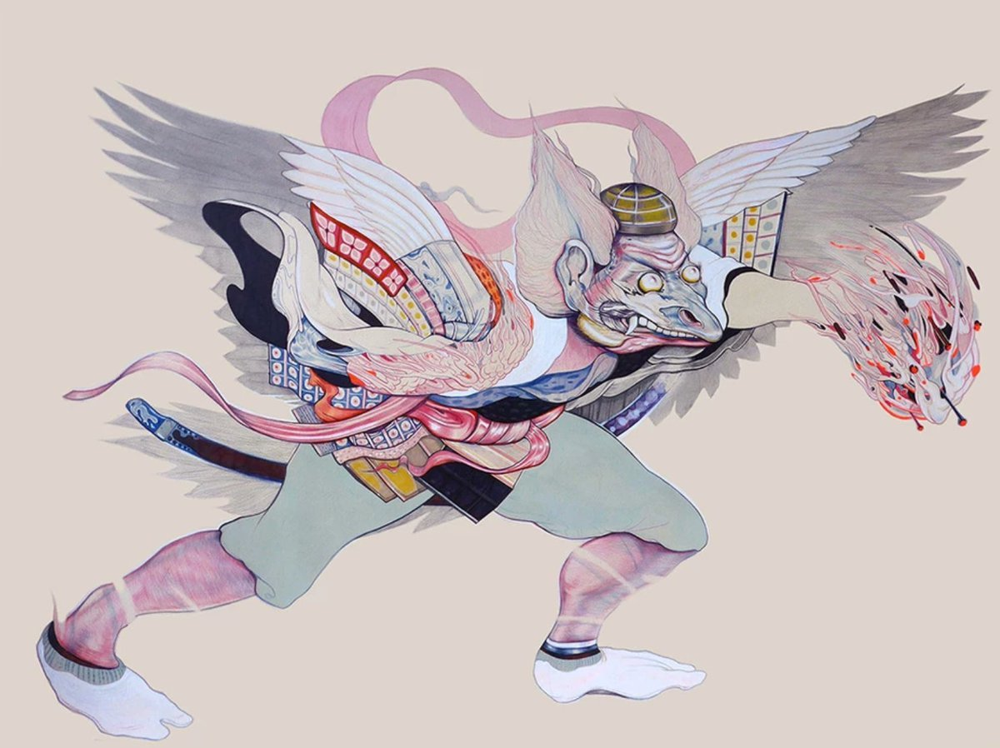
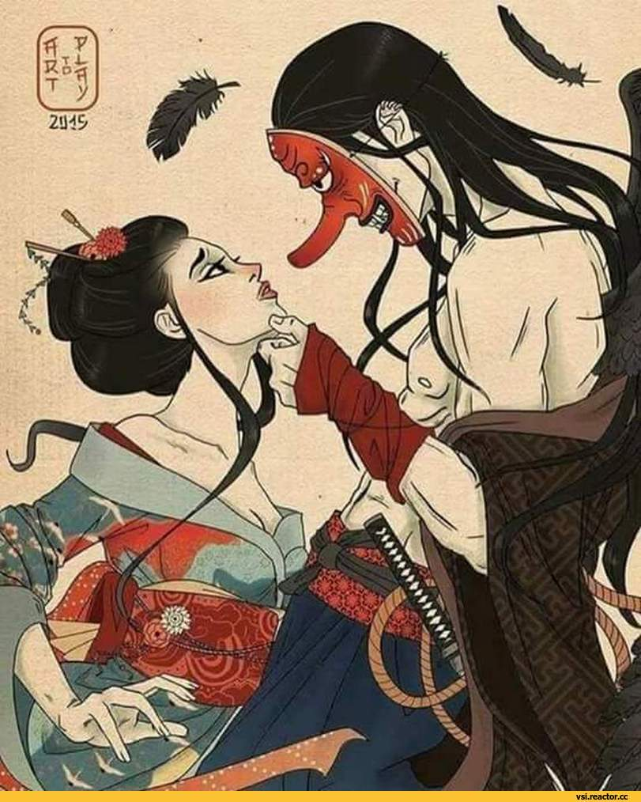

Тануки (яп. 狸 или タヌキ) — японское название енотовидной собаки. За пределами Японии так называют традиционных японских зверей-оборотней, которых в самой Японии называют бакэдануки (яп. 化け狸).
Тануки символизируют счастье и благополучие. Второй по популярности зверь-оборотень (первый — кицунэ). В отличие от кицунэ, образ тануки практически лишён негативной окраски. Считается, что тануки — большие любители сакэ. Поэтому без его присутствия нельзя сделать хорошего сакэ. По этой же причине фигурки тануки, порой весьма большие, являются украшением многих питейных заведений. Они изображают тануки толстяком-добряком с заметным брюшком, из-под которого проглядывается мошонка. Считается, что тануки может раздувать их до невероятных размеров. Бытует поверье, что если в шкуру тануки завернуть кусочек золота и поколотить, он также увеличится в размерах. Благодаря этому тануки почитается не только как покровитель питейных заведений, но и как покровитель торговли.
 Кицу́нэ (яп. 狐) — мифическое существо-ёкай в японской мифологии и фольклоре, лисица, обладающая сверхъестественными способностями. Часто играет роль трикстера, по поверьям живёт сотни и даже тысячи лет, а также может превращаться в других животных и человека.
В японском фольклоре эти животные обладают большими знаниями, длинной жизнью и магическими способностями. Главная среди них — способность принять форму человека; лиса, по преданиям, учится делать это по достижении определённого возраста (обычно сто лет, хотя в некоторых легендах — пятьдесят). Кицунэ обычно принимают облик обольстительной красавицы, симпатичной молодой девушки, но иногда оборачиваются и мужчинами.
 Тэ́нгу (яп. 天狗, дословно — «Небесная собака»; китайск.: Тянь-гоу) — существо из японских поверий. В японских верованиях тэнгу тератологическое существо; представляется в облике мужчины огромного роста с красным лицом, длинным носом, иногда с крыльями. Тэнгу очень часто носит одежду горного отшельника (ямабуси), он наделён огромной силой.
Отождествление тэнгу с монахами повлияло на образ типичного тэнгу. Примерно с XII века он принял форму ямабуси в характерной шапочке, с крыльями за спиной, посохом или мечом в руке и с характерным лицом. В случае дайтэнгу (великих тэнгу) это было красное лицо с огромным носом. В случае же карасу тэнгу лицо выделялось круглыми глазами и птичьим клювом вместо носа. Вместе с эволюцией внешнего вида с XII века стала расти и положительная роль тэнгу. Появились многочисленные легенды о том, что они были учителями лучших воинов Японии. Благодаря такому учителю воины с легкостью побеждали простых смертных. Постепенно тэнгу стали считаться и воплощением ками гор, порою выступая противниками буддийского учения. Со временем эта враждебность исчезла, и тэнгу превратились в защитников любых святилищ, в первую очередь горных. Тем не менее ими по-прежнему пугают маленьких детей.
 